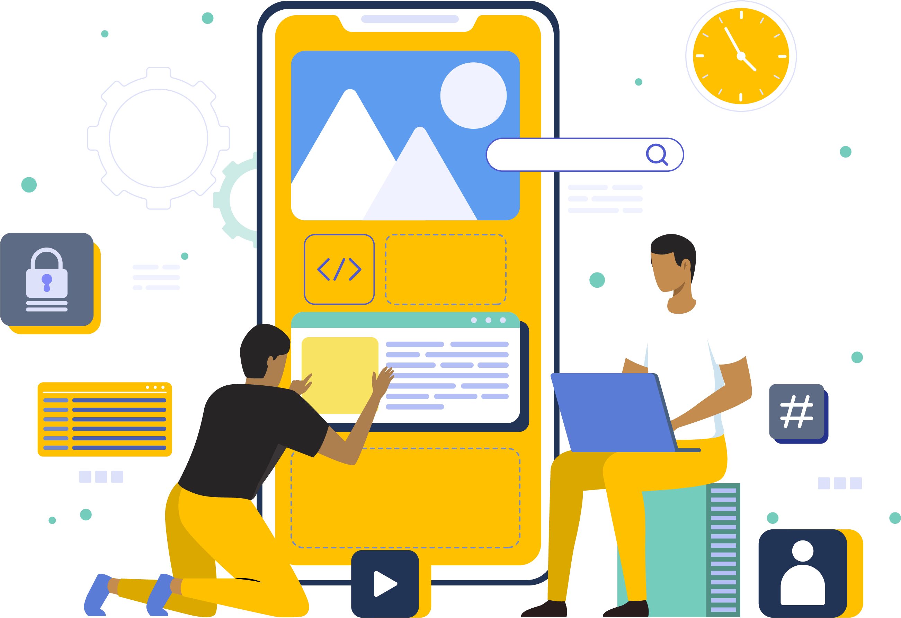
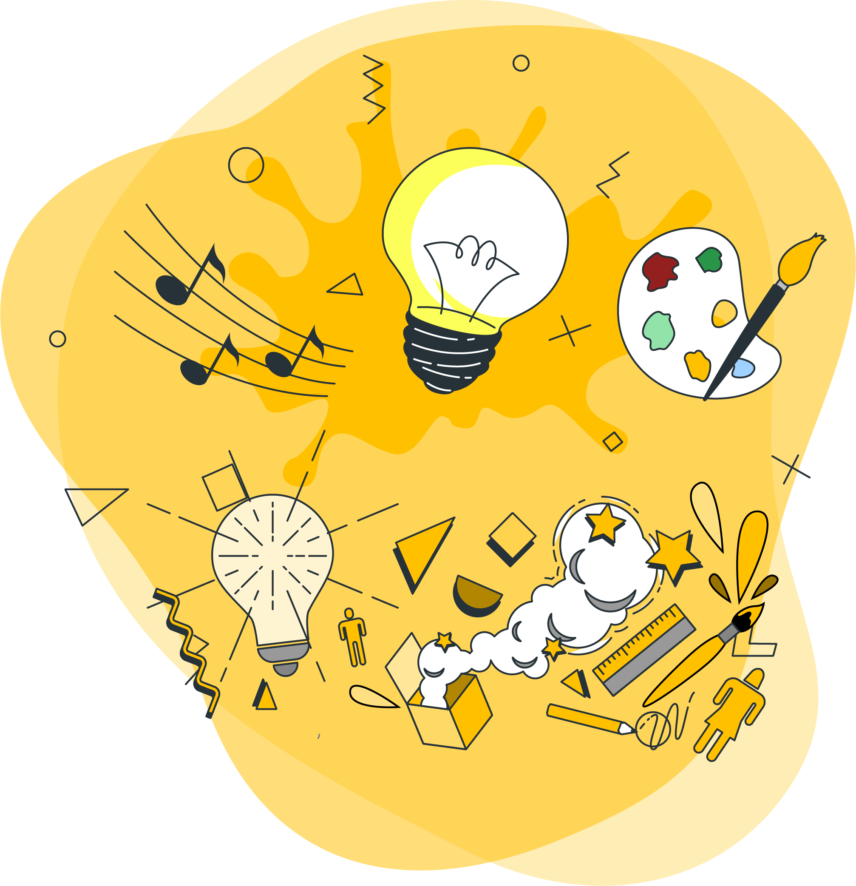
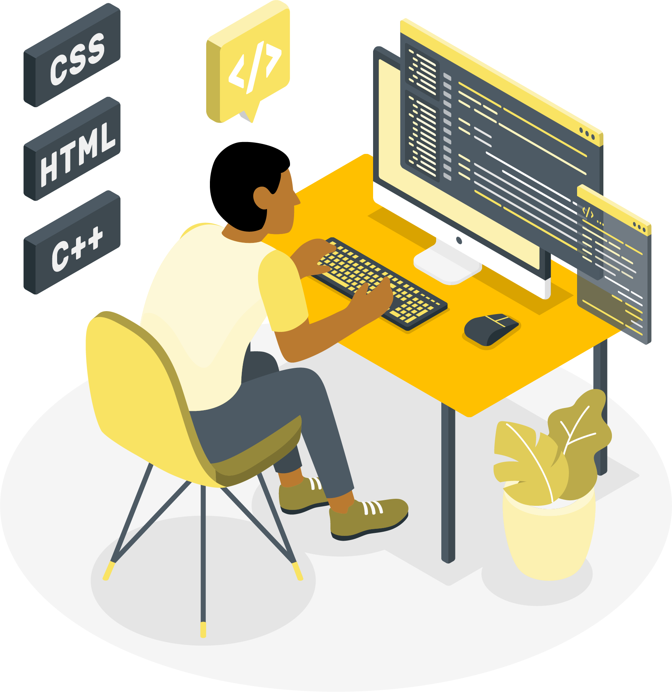

Web Application
&
Graphics Design
Ccurrently available for selected projects collaborations and
consulting
With over 10 years in the industry, we are experienced in
creating fully responsive website, app design and engaging
brand experiences. Find out more about our services.
WEB APP/DESIGN
MOBILE APP/DESIGN
GRAPHICS

PASSIONATE
Each project starts with an in-depth brand research to ensure we
only create products that serve a purpose. We merge art, design,
and technology into exciting new solutions.

CREATIVE
Our creativity enables us to think about a task or a problem in a
new or different way, or the ability to use the imagination to
generate new ideas, which helps to solve complex problems.

RESOURCEFUL
Everything that we do has a strategic purpose. We use an agile
approach in all of our projects and value customer collaboration.
It guarantees superior results that fulfill our clients’ needs.

DEDICATED
We are loyal and devoted to the cause. Passionate about the
commitments we make and the goals we set. Giveing us the strength
do do the hard things.